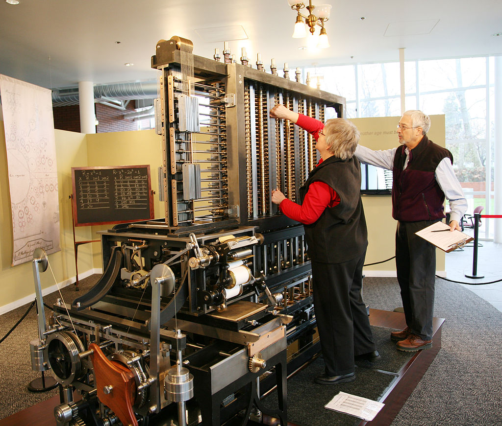

Bilgisayar Nedir?
Bilgisayar, aritmetik veya mantıksal işlem dizilerini (berim) otomatik olarak yürütmek üzere programlanabilen dijital bir elektronik makinedir. Çağdaş bilgisayarlar, programlar olarak bilinen genel işlem kümelerini gerçekleştirebilir. Bu programlar, bilgisayarların çeşitli görevleri gerçekleştirmesini sağlar. Ayrıca bir bilgisayar sisteminin tam verimle çalışabilmesi için donanım, işletim sistemi ve çevresel cihazlara sahip olması gerekmektedir. Bu terim aynı zamanda bir bilgisayar ağı veya bilgisayar kümesi gibi birbirine bağlı ve birlikte çalışan bir grup bilgisayar anlamına da gelebilir. Çok amaçlı endüstriyel ve tüketici elektroniği, bilgisayarları kontrol sistemi olarak kullanır. Örneğin mikrodalga fırınlar ve uzaktan kumandalar gibi basit özel amaçlı aygıtlar, endüstriyel robotlar ve bilgisayar destekli tasarım gibi fabrika aygıtlarının yanı sıra kişisel bilgisayarlar gibi genel amaçlı aygıtlar ve akıllı telefonlar gibi mobil cihazlar da dahildir. Bilgisayarlar, milyarlarca başka bilgisayar ve kullanıcıyı birbirine bağlayan internete de (genel ağ) güç sağlar. Tarihteki ilk bilgisayarlar, sadece hesaplamalar için kullanılıyordu. Abaküs gibi basit elle işletilen araçlar, eski zamanlardan beri insanların hesaplama yapmasına yardımcı olmuştur. Sanayi Devrimi'nin başlarında, dokuma tezgâhları için gerekli olan kılavuz desenler gibi uzun sıkıcı görevleri otomatikleştirmek için bazı mekanik aygıtlar geliştirildi. Daha karmaşık elektrikli makineler, 20. yüzyılın başlarında özel eş hesaplamalar yaptı. İlk dijital elektronik hesap makinesi ise II. Dünya Savaşı sırasında geliştirildi. 1940'ların sonundaki ilk yarı iletken transistörleri, 1950'lerin sonlarında silisyum temelli MOSFET (MOS transistör) ve monolitik bütünleşmiş devre (IC) gibi çip teknolojileri izledi ve 1970'lerde mikroişlemci ve mikrobilgisayar devrimine yol açtı. Bilgisayarların hızı, gücü ve çok yönlülüğü, transistör sayılarının hızla artmasıyla (Moore yasasının öngördüğü gibi) o zamandan beri çarpıcı bir şekilde artmaktadır ve 20. yüzyılın sonları ile 21. yüzyılın başlarında Sayısal Devrim'e yol açmıştır. Geleneksel olarak, çağdaş bir bilgisayar en az bir işlem öğesinden, tipik olarak bir mikroişlemci biçiminde bir merkezî işlem biriminden (CPU), bir tür bilgisayar belleğinden ve tipik olarak yarı iletken bellek yongalarından oluşur. İşlem öğesi, aritmetik ve mantıksal işlemleri gerçekleştirir ve bir sıralama ve denetleme birimi, saklanan bilgilere yanıt olarak işlemlerin sırasını değiştirebilir. Çevresel aygıtlar arasında giriş aygıtları (klavyeler, fareler, oyun çubuğu vb.), çıktı aygıtları (monitörler, yazıcılar vb.) ve her iki işlevi de yerine getiren giriş/çıkış aygıtları (ör. 2000'li yılların dokunmalı ekranı) bulunur. Çevresel aygıt, bilgilerin dış bir kaynaktan alınmasına izin verir ve işlemlerin sonucunun kaydedilmesini ve alınmasını sağlar.
kaynak
